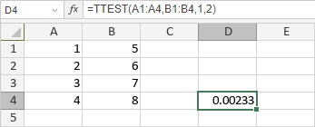

TTEST funkcija
Funkcija TTEST je jedna od statističkih funkcija. Koristi se za vraćanje verovatnoće povezane sa Studentovim t-testom. Koristite funkciju TTEST da biste utvrdili da li je verovatno da su dva uzorka potekla iz iste dve osnovne populacije koje imaju istu srednju vrednost.
Sintaksa
TTEST(array1, array2, tails, type)
Funkcija TTEST ima sledeće argumente:
| Argument | Opis |
|---|---|
| array1 | Prvi opseg numeričkih vrednosti. |
| array2 | Drugi opseg numeričkih vrednosti. |
| tails | Broj repova raspodele. Ako je 1, funkcija koristi jednostranu raspodelu. Ako je 2, funkcija koristi dvostranu raspodelu. |
| type | Numerička vrednost koja određuje vrstu t-testa koji se izvodi. Moguće vrednosti su navedene u tabeli ispod. |
Argument type može biti jedna od sledećih vrednosti:
| Numerička vrednost | Vrsta t-testa |
|---|---|
| 1 | Upareni |
| 2 | Dva uzorka sa jednakom varijansom (homoskedastičan) |
| 3 | Dva uzorka sa nejednakom varijansom (heteroskedastičan) |
Napomene
Kako primeniti funkciju TTEST.
Primeri
Slika ispod prikazuje rezultat koji vraća funkcija TTEST.
